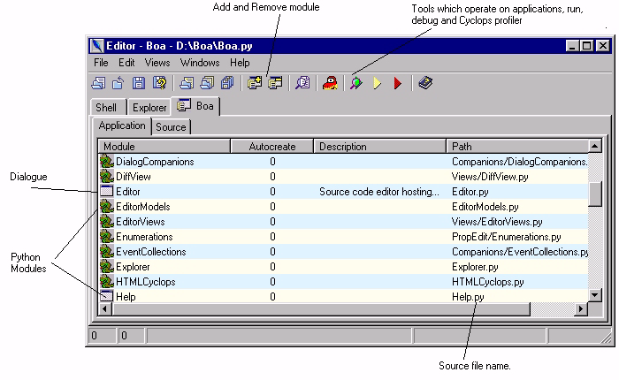

| Getting Started Guide for Boa Constructor |
| Getting Started Guide for Boa Constructor |
When the module being edited is a application, the Editor provides a special Application pane. The Application pane relaces the 'Explore' pane which is displayed for other modules. This Application pane allows you to easily track the files in your application, and to add new modules, dialogs and other types of files to your application.
Files are added from the 'New' pane in the Palette.
The application pane provides access to the 'Cyclops' tool.
| Getting Started Guide for Boa Constructor |